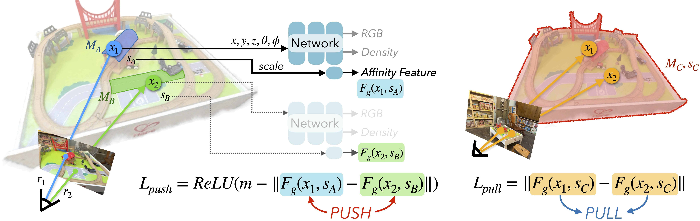
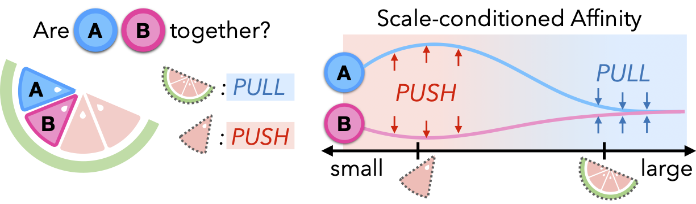
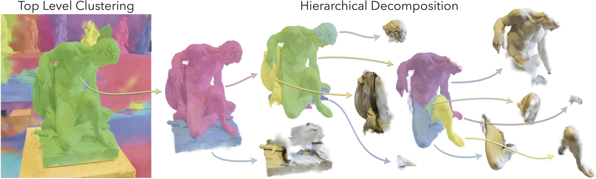
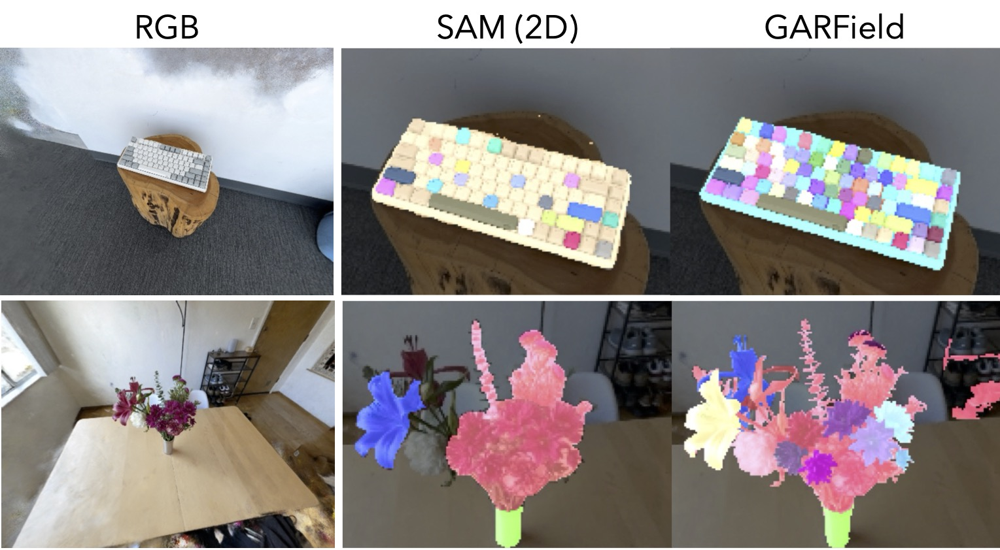

GARField
Group Anything with Radiance Fields
UC Berkeley
*Denotes Equal Contribution

TL;DR: Hierarchical grouping in 3D by training a scale-conditioned affinity field from multi-level masks
GARField can extract assets at different granularities, like these from the above scene
Overview
Given multi-level masks from SAM, GARField optimizes a scale-conditioned affinity field describing how tightly grouped different 3D points are. Grouping is a fundamentally multi-scale task, so input masks may be overlapping or conflicting within and across views. GARField's chooses to resolve these ambiguities by conditioning on euclidean scene scale; selecting different hierarchies of groups depending on their 3D size. Once trained, GARField can be either interactively queried by providing points along with a scale, or produce globally consistent clusterings automatically at a hierarchy of scales.
Click the thumbnails below to load scenes, see groupings at different scales.
Affinity Field Training
GARField uses a contrastive loss to optimize its feature field. Given pairs of rays in a training batch, rays which land outside the same mask are pushed apart in feature space, and those within the same mask are pulled together. Affinity is the L2 distance in feature space between points.
Importance of scale
Humans can interpret a scene at multiple levels of granularity. However, this richness also creates ambiguities in grouping, making it unclear how we should supervision for grouping. To reconcile these conflicting signals into a single affinity field, GARField embraces this ambiguity through physical scale, allowing a point to belong to different groups of different sizes.
Automatic Decomposition
GARField's affinity can be recursively clustered to break a scene into smaller and smaller subcomponents.
Interactive Selection

Asset Extraction
GARField can be used to extract 3D-complete assets from casual scene scans, which can then be simulated
Why Multi-View?
Because SAM only outputs 3 levels of hierarchy, from some viewpoints this can be insufficient to capture fine-grained groups. GARField produces more complete groups by incorporating masks from many different views.
